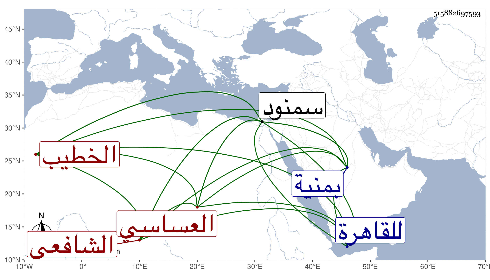

0902Sakhawi.DawLamic.ITO20230111-ara1.EIS1600.515882697593
Biography ID: 515882697593
1049
يحيى بن موسى بن محمد بن موسى بن علي بن زكي بوزن ابنه الشرف ابن الشرف بن الشهاب بن الزكي العساسي بمهملات أولاها مفتوحة والثانية مشددة نسبة لمنية عساس السمنودي الشافعي الخطيب والد عبد الرحمن الماضي . ولد بمنية عساس سنة ثمانين وسبعمائة تقريبا وحفظ بها القرآن وصلى به والتبريزي في الفقه والملحة والنحو والقريبة للعز الديريني وهي ستمائة بيت وخمسة وثمانون بيتا والميزان الوفي في معرفة اللحن الخفي له أيضا وخطب ببلده كأبيه وأجداده وشهد بينهم ثم انتقل إلى سمنود سنة أربع عشرة بعد موت والده فبحث بها في التبريزي على الشيخ عمر بن عيسى ، وحج في سنة عشرين والتي تليها وتردد للقاهرة غير مرة وكان مختصا بالجد أبي الأم بل بلغني أنه كان أخوه من الرضاع ونظم الخصائص النبوية وكذا رفع لشيخنا سؤالا منظوما عن مسجد بسمنود فأجابه عنه نظما وكلاهما مودع في الجواهر ، وكتب عنه ابن فهد وابن الإمام والبقاعي قصيدة أولها :
| جمرة الحب أشعلت في الحشاء | نار وجد تضرمت بالهواء |
وأخرى أولها :
| لأجلك يا ليلى سهرت اللياليا | وعاديت فيك كل من كان راضيا |
مات في ثاني عشر شوال سنة اثنتين وأربعين ولم يكمل السبعين رحمه الله .
